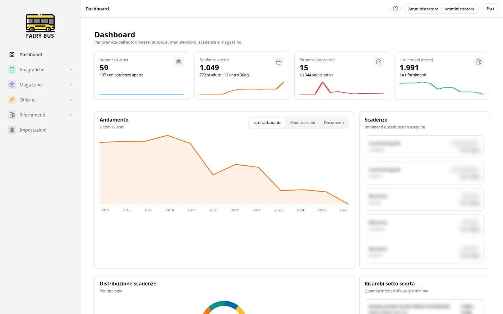
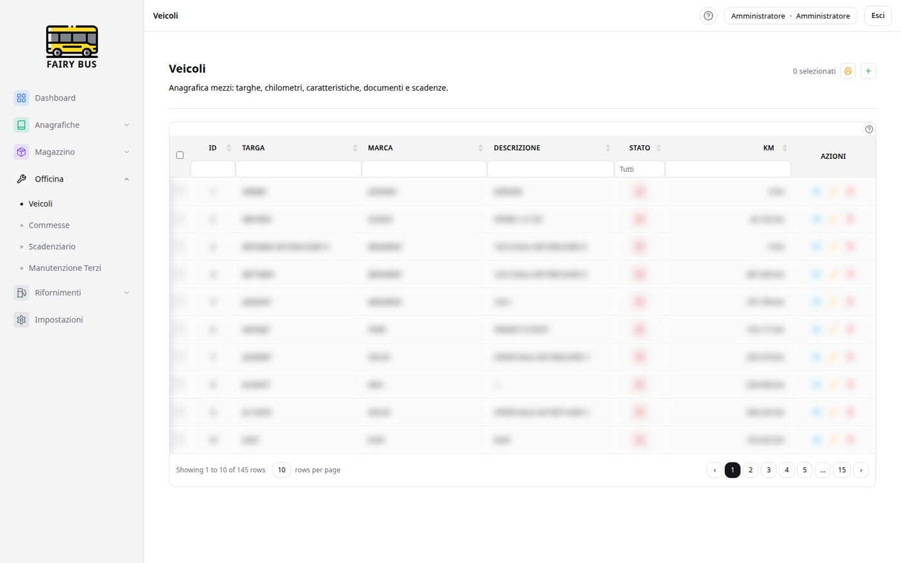
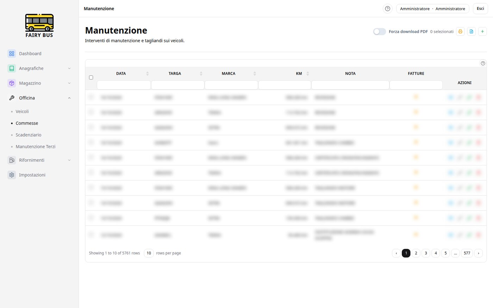
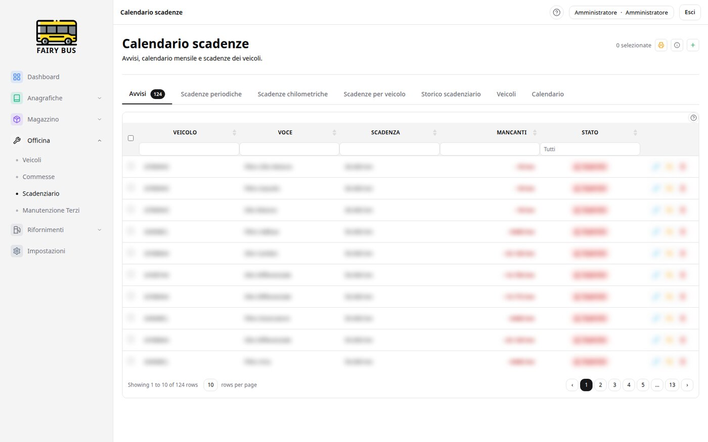
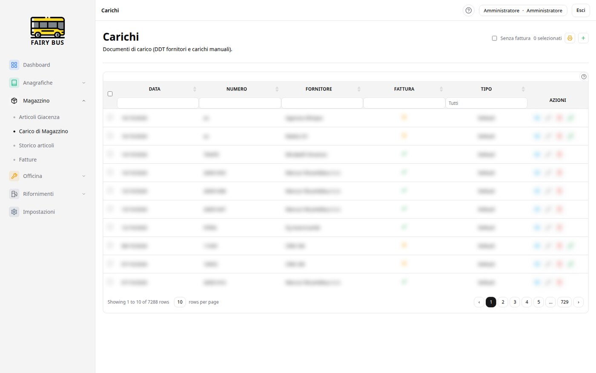
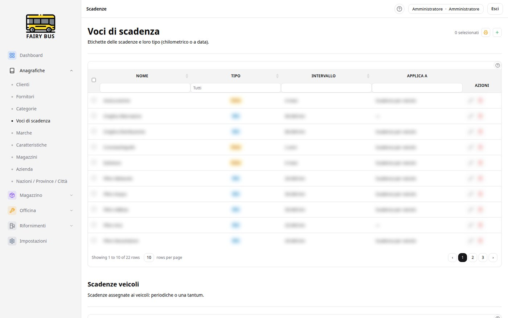

Veicoli, magazzino ricambi, manutenzioni, scadenze, rifornimenti e fatture — tutto in un'unica applicazione web che installi sul tuo server e controlli al 100%.
Scarica il pacchetto Guida all'installazioneDalla scheda del singolo mezzo allo scadenzario completo, fino al magazzino ricambi con soglie di riordino.
Anagrafica veicoli con targhe, chilometri, caratteristiche, documenti allegati e scadenze collegate.
Articoli, giacenze per magazzino, carichi da DDT fornitore, scarichi su interventi e avvisi di sottoscorta.
Schede di manutenzione e commesse: ricambi scaricati automaticamente dal magazzino, manodopera e manutenzioni presso terzi.
Revisioni, cronotachigrafo, scadenze periodiche e chilometriche per veicolo — con calendario, avvisi e storico.
Litri erogati per veicolo e stazione, import da file, statistiche sui consumi e andamento mensile.
Carichi, scarichi e fatture con numerazione, selezione multipla e stampa PDF professionale.
KPI in tempo reale: mezzi attivi, scadenze aperte, ricambi sottoscorta, trend di consumi e manutenzioni.
Utenti multipli con ruoli e permessi granulari: ognuno vede e tocca solo ciò che gli compete.
Creazione, download e ripristino del database dall'interfaccia — anche schedulabile da riga di comando.
Accesso diretto al database da /pma/, visibile solo agli amministratori, senza porte extra esposte.
Self-hosted al 100%: MariaDB + Docker, nessun servizio cloud esterno, nessun abbonamento.
Il pacchetto contiene tutte le immagini Docker: si installa anche su server senza accesso a internet.
Interfaccia italiana, tabelle filtrabili, selezione multipla e stampa — i dati reali sono sfocati per privacy.






Un unico pacchetto, un comando. Serve solo un server Linux con Docker.
SHA verificabile dopo il downloadProcedura testata su Debian 13: circa 15 minuti, di cui 10 di attesa dei container.
Su Debian/Ubuntu basta lo script ufficiale. Servono privilegi di root (o sudo):
# come root o con sudo
curl -fsSL https://get.docker.com | sh
# per usare docker senza sudo (opzionale):
usermod -aG docker $USER # poi riloggati
# verifica:
docker --version
docker compose version # serve il plugin Compose v2curl? Installa i minimi: apt update && apt install -y curl unzip ca-certificatesCopia lo zip sul server (SCP, chiavetta, o wget se il server è online) ed estrailo:
unzip fairybus-install-1.0.0.zip
cd fairybus-install./install.shQuattro domande, poi è tutto automatico:
| Domanda | Default | Note |
|---|---|---|
| Porta HTTP | 8080 | La porta su cui l'app risponderà |
| URL pubblico | http://localhost:8080/ | Importante: quello che gli utenti digiteranno nel browser (dominio o IP) |
| Suffisso istanza | vuoto | Per più installazioni sullo stesso server (es. -demo) |
| Email + password admin | admin@fairybus.local | La password, se vuota, viene generata e stampata a fine installazione |
app.env, voce app.baseURL).Apri http://<server>:PORTA/login con l'email e la password scelte. Trovi il database factory: pulito, con un solo utente admin e i dati di base già caricati (comuni, marche, categorie, tipi documento…).
/pma/ (voce PMA nel menu, visibile solo agli admin). Login: root + MYSQL_ROOT_PASSWORD dal file .env.Cosa puoi modificare e come aggiornare.
.env: porta, password DB, timezone. app.env: baseURL, database, chiave di cifratura. Dopo le modifiche: docker compose up -d.
L'app espone HTTP. Metti davanti un reverse proxy (Caddy, Nginx Proxy Manager) e aggiorna app.baseURL con l'URL https.
./update.sh fairybus-patch-x.y.z.zip per le patch leggere, ./update.sh fairybus-app-x.y.z.tar.gz per le release complete. Migrazioni e pulizia cache automatiche.
Da Impostazioni → Backup, oppure schedulato: docker compose exec app php spark fb:backup. Il ripristino si fa dall'interfaccia.
Scompatta in una seconda cartella e usa il suffisso istanza (es. -demo): container, volumi e rete restano separati.
~1.5 GB di RAM liberi bastano. Il buffer pool di MariaDB (2G di default) si riduce in my.cnf per macchine piccole.
Le risposte ai casi più frequenti.
L'URL pubblico inserito all'installazione non corrisponde a quello del browser. Correggi app.baseURL in app.env e riavvia:
sed -i 's|^app\.baseURL = .*|app.baseURL = http://mio-server:8080/|' app.env
docker compose restart app
docker compose exec app sh -c 'rm -rf /var/www/html/writable/cache/*'Controlla i log e che la porta sia libera:
docker compose logs -f app
docker compose ps # i container devono essere "running/healthy"
ss -ltnp | grep 8080 # porta occupata? cambiala in .env → APP_PORTReimpostala dal container (genera un nuovo hash e aggiorna l'utente 1):
HASH=$(docker compose exec -T -e FB_PASS="nuovaPassword" app php -r 'echo password_hash(getenv("FB_PASS"), PASSWORD_BCRYPT);')
docker compose exec -T db sh -c "mariadb -uroot -p\"$MYSQL_ROOT_PASSWORD\" $DB_NAME -e \"UPDATE fb_users SET password_hash='$HASH' WHERE id=1;\""Le variabili MYSQL_ROOT_PASSWORD e DB_NAME sono nel file .env della cartella di installazione.
docker compose down -v # ATTENZIONE: cancella database e upload
rm -f .env app.env
rm -rf app-src
./install.shUsa la funzione Backup/Ripristina dell'app: crea uno zip che contiene un file backup.sql con nome fb-backup-AAAAMMGG-OOmmSS.zip e copialo nei backup:
docker cp fb-backup-20261017-150604.zip fairybus-app:/var/www/html/writable/backups/
docker compose exec app chown www-data:www-data /var/www/html/writable/backups/*.zipPoi Impostazioni → Backup → Ripristina. Sostituisce tutti i dati attuali.
MariaDB impiega ~30-60s al primo avvio (crea il database factory). Aspetta e ricontrolla: docker compose logs db. Se il volume era già stato creato con altre password, allinea DB_PASSWORD in .env a quella originale o ricrea il volume.